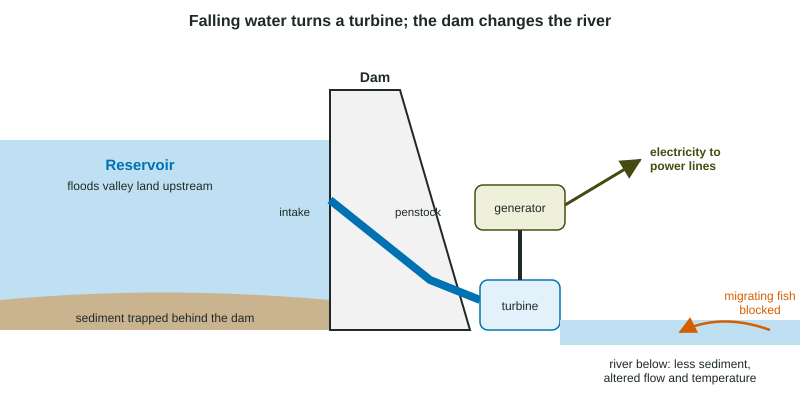

Hydroelectric Power
Hydroelectric power turns the energy of falling water into electricity with a turbine and generator.
Part 1 · Hook
Why this matters
Part 2 · Before you start
What this builds on
Part 3 · Prerequisite check
Quick check before you start
1. In a power plant, what does the generator do?
- Turns the spinning of a shaft into electricity
- Burns the fuel
- Cools the steam
- Pumps water
Show the answer
A generator spins magnets past coils of wire to make electricity.
- Correct: Turns the spinning of a shaft into electricity:
- Burns the fuel:
- Cools the steam:
- Pumps water:
2. Which places are best for using falling water to make electricity?
- Steep rivers with steady flow
- Flat deserts
- Shallow ponds
- Coastal salt flats
Show the answer
Much water dropping a long way carries the most energy.
- Correct: Steep rivers with steady flow:
- Flat deserts:
- Shallow ponds:
- Coastal salt flats:
Part 4 · See it
See it first

Part 5 · Step by step
How it works, step by step
- A dam holds water high in a reservoirthe water stores energy because of its height
- Water falls through the penstockit spins a turbine that turns a generator, making electricity with no fuel burned
- The reservoir floods the valley and slows the riverland and homes are lost, sediment settles behind the dam, and decaying plants release methane
- The dam blocks the riverfish migration is cut off and the river below gets less sediment and changed flow and temperature
Part 6 · Key ideas
Key ideas
- Hydroelectric power: falling water spins a turbine and generator. Output depends on how much water flows and how far it falls.
- Types: large dams with reservoirs (storage, flexible output), run-of-the-river systems (little or no reservoir, less flooding, output follows the river) and tidal energy (tides driven by the moon).
- Advantages: renewable, no emissions while running, reliable, quick to adjust, reservoirs store energy and help control floods.
- Disadvantages: flooded land and displaced people, blocked fish migration, trapped sediment, altered river flow and temperature, methane from decaying plants in reservoirs, and reduced output in droughts.
Part 7 · Misconception
A common mistake
The wrong idea: Hydroelectric power has no environmental impact because it is renewable and burns no fuel.
What actually happens: Burning no fuel is not the same as no impact. Dams flood land, block fish, trap sediment and change rivers for hundreds of kilometers downstream.
Part 8 · Check yourself
Check yourself
Exam-style questions. Anything you miss goes into your review queue.
1. How does a hydroelectric dam make electricity?
- Water is heated into steam that spins a turbine
- Water is split into hydrogen that is then burned
- Sunlight on the reservoir surface becomes electricity
- Falling water spins a turbine that turns a generator
Show the answer
Water held behind the dam flows down through the penstock and spins a turbine; the turbine turns a generator.
- Water is heated into steam that spins a turbine: No heat or steam is needed at a dam.
- Water is split into hydrogen that is then burned: Dams do not make hydrogen.
- Sunlight on the reservoir surface becomes electricity: The reservoir stores water, not sunlight.
- Correct: Falling water spins a turbine that turns a generator: Right: moving water turns the turbine directly.
2. What is a run-of-the-river hydroelectric system?
- One that floods a whole valley behind a very tall concrete dam
- One that uses ocean tides moving in and out of a narrow bay
- One using the river's natural flow, with little storage
- One that pumps river water uphill to store it for later use
Show the answer
Run-of-the-river systems divert part of the flow through turbines without a large reservoir, so they flood little land but output follows the river's flow.
- One that floods a whole valley behind a very tall concrete dam: A tall dam with a large reservoir is the conventional design.
- One that uses ocean tides moving in and out of a narrow bay: Using tides is tidal energy.
- Correct: One using the river's natural flow, with little storage: Right: natural flow, little or no storage.
- One that pumps river water uphill to store it for later use: Pumping water uphill for later is pumped storage.
3. A large dam is built on a river where salmon swim upstream to spawn. What is the most direct effect on the salmon?
- The dam blocks their way to upstream spawning sites
- The dam raises the salt content of the river water
- The turbines add nutrients that cause algae to grow
- The reservoir releases a gas that poisons the fish
Show the answer
Dams block fish that migrate between the ocean and upstream spawning streams. Fish ladders help some species, but numbers often fall.
- Correct: The dam blocks their way to upstream spawning sites: Right: the dam is a barrier to migration.
- The dam raises the salt content of the river water: Dams do not make river water salty.
- The turbines add nutrients that cause algae to grow: Turbines do not add nutrients.
- The reservoir releases a gas that poisons the fish: Reservoirs do not release a poison that kills salmon.
Data
A hydroelectric dam's yearly output
| Measure | Value |
|---|---|
| Capacity (maximum power) | 400 MW |
| Hours in a year | 8,760 h |
| Capacity factor (average output as a share of maximum) | 45% |
| Electricity used by an average home | 10.5 MWh per year |
4. Write the setup for the electricity the dam produces in a year, in MWh, using its capacity, the hours in a year and its capacity factor. Then give the answer.
Type the setup as on the exam, with brackets and units, then the answer.
Show the answer
- Setup: ; answer 1,576,800 MWh
5. An average home uses 10.5 MWh a year. About how many homes can the dam supply? Round to the nearest thousand.
Type a number, then its unit (homes). Scale words (2.5 million) and powers of ten (2.5 × 10^6) are read.
Show the answer
- Answer: 150,171 homes
6. In a drought year the river's flow falls by half. What happens to the dam's output, and why?
- It stays the same, because the capacity is still 400 MW
- It rises, because the reservoir gets warmer
- It falls, because less water flows through the turbines
- It rises, because the water falls faster when the river is low
Show the answer
Output depends on how much water flows through the turbines and how far it falls. Less flow means less electricity, even though the installed capacity is unchanged.
- It stays the same, because the capacity is still 400 MW: Capacity is the maximum, not what is actually produced.
- It rises, because the reservoir gets warmer: Temperature does not raise output.
- Correct: It falls, because less water flows through the turbines: Right: less water, less electricity.
- It rises, because the water falls faster when the river is low: A lower reservoir means a smaller drop, which lowers output further.
Part 9 · Summary
Summary
Part 10 · Up next
What comes next
Part 11 · Connections